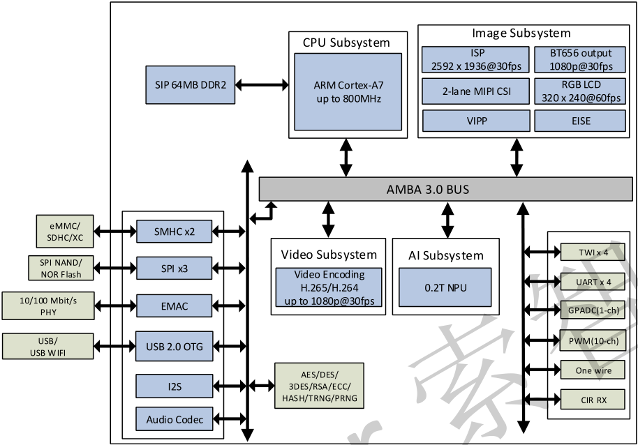
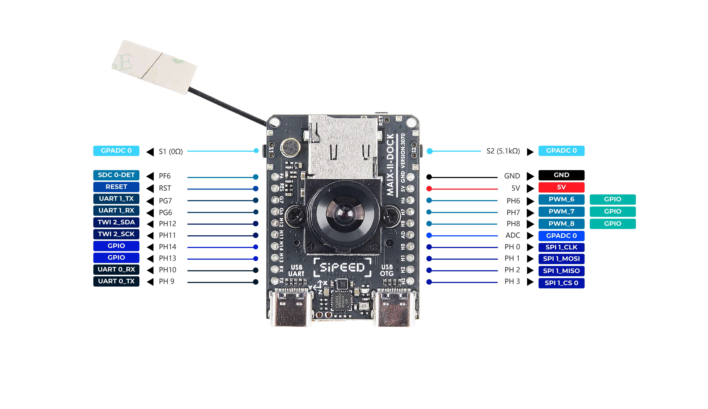
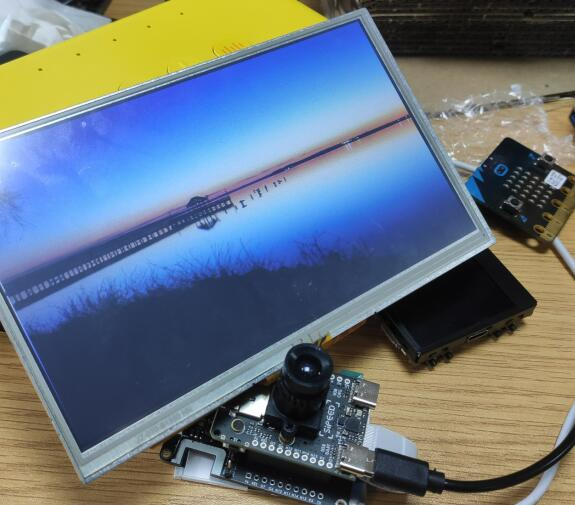

板级资源介绍
MaixII M2dock 是基于 V831 芯片设计的一款【板卡】+【底板】的开发板产品。
这个不是Maix Dock的升级版，这两款开发板是完全不一样的开发环境和使用方式的，不要有惯性思维
M2板卡
细节请看淘宝商品介绍，可同步最新讯息。

板卡参考资料下载 MaixII_V831_v3100
V831 芯片介绍
从 2019 年至今的时间，可以开始看到几个相机 SoC 与一个内置的转专业或 SIMD 指令加快人脸检测、物体检测等等，从低分辨率 Kendryte K210 处理器 2.5 k Ingenic T31 MIPS 视频处理器，甚至 4k 能力 iCatch V37 相机 SoC 。 Allwinner 过去推出了几个摄像头处理器(V3， V316， S3…)，但没有一个包含 NPU (又名 AI 加速器)。现在这已经改变了，Allwinner V831 Cortex-A7 全高清摄像头 SoC 还包括一个小的 200 GOPS NPU 。
取自 allwinner-v831-ai-full-hd-camera-soc-powers-sochip-v831-development-board

资源
| 项目 | MAIX-I (K210) | MAIX-II (V831) |
|---|---|---|
| 主控芯片 CPU |
400~600Mhz | 800~1000Mhz (优势项目标红，下同) |
| 视频编码器 Video encoder |
None | H.264, up to 1080p@30fps H265, up to 1080p@30fps JPEG, up to 1080p@30fps |
| AI加速器 NPU |
0.23TOPS support Conv+BN+ACT+POOL |
0.2TOPS support Conv,Inner_Product,Pool,Eltwise,ACT,BN,Split,Concat |
| 内存 Memory |
8MB SRAM | SIP 64MB DDR2 |
| 存储 Storage |
16MB SPI Nor Flash | 可选的16M flash(默认空贴) |
| 摄像头 Camera |
DVP, 最高输入30W像素 | 2lane MIPI, 最高支持1080P@60fps |
| 显示 Display |
8bit MCU LCD | 8bit MCU LCD, 配转接板可接最大10寸RGB LCD |
| SDIO | None | SMHC x2 (SDC0, SDC1) |
| SPI | SPIx3 | SPI x2 (SPI0, SPI1) |
| I2C | I2C x3 | I2C x4 (TWI0, TWI1, TWI2, TWI3) |
| I2S | 8bit I2S | I2S x1 (I2S0) |
| Ethernet | None | 10/100 Mbit/s Ethernet port with RMII interface |
| ADC | None | 1-ch 6bit LRADC for key |
| Audio | None | LINEOUTP + MICIN1P/N |
| 开发环境 | Maixpy/C | Maixpy3/linux |
底板
一般情况下可以认为底板屏幕为正面，带摄像头为背面。

感谢热心网友分享的 M2 模块底板母座 PCB 封装
底板参考资料下载 MaixII_V831_v3100
资源
| 标号 | Maix II 部件 | 功能 | 备注 |
|---|---|---|---|
| 1 | M.2 B-KEY 母座*1 | 用于连接 V831 核心版 | 出厂已连接 |
| 2 | 核心板M2 铜柱螺母*1 | 用于配合 M2 螺丝固定 V831 核心板 | 出厂已固定 |
| 3 | 电源指示 LED 灯*1 | 用于指示底板是否正常通电 | --- |
| 4 | 状态指示 LED灯*1 | 用户可编程LED灯，一般用于状态指示 | --- |
| 5 | CPU 复位键*1 | 按下可重启 V831 芯片 | --- |
| 6 | 用户按键*2 | 可以控制两路 IO 电平，自定义功能 | --- |
| 7 | Wi-Fi 模块*1 | 型号 RTL8189FTV，用于给模组提供 Wi-Fi 功能 | SDIO 接口 |
| 8 | BTB 摄像头接口*1 | 用于连接 BTB 摄像头模块 | 出厂已连接 |
| 9 | 摄像头 M2 铜柱螺母*2 | 用于固定 BTB 摄像头 | 出厂已固定 |
| 10 | FHD 摄像头*1 | 默认SP2305 Sensor BTB形式，1080P | 默认含6mm焦距M12镜头，用户可选配其他焦距镜头 |
| 11 | USB 转 UART 芯片*1 | 型号 GD32F150G8 供串口调试使用 | 出厂已烧录固件 |
| 12 | Type-C 接口(USB OTG) *1 | 用于 V831 的 USB OTG功能 | 可用于模组供电 |
| 13 | Type-C 接口(UART) *1 | 用于对V831通常的串口调试 | 可用于模组供电 |
| 14 | 三轴加速度传感器*1 | I2C接口，可提供3轴的加速度数据 | --- |
| 15 | microSD 卡槽*1 | 用于外接 microSD卡 | 模组的系统默认从SD卡引导 |
| 16 | LCD 接口*1 | FPC0.5mm 24Pin，MCU 接口 | --- |
| 17 | IPS 高清屏幕*1 | 1.3寸IPS屏幕，分辨率240*240 | 出厂已连接 |
| 18 | IPEX Wi-Fi天线座 | IPEX(一代) Wi-Fi天线 | --- |
| 19 | 外拓排母 | 引出 V831 的 通用IO口，可用于连接外设 | --- |
| 20 | 扬声器接口*1 | MX1.25 2P接口（间距1.25mm） | --- |
| 21 | 扬声器*1 | 8Ω1W 1609复合铝膜扬声器 | 出厂已连接 |
| 22 | 麦克风*1 | 模拟驻极体麦克风 | --- |

屏幕转接板
已上架，请到淘宝上购买
